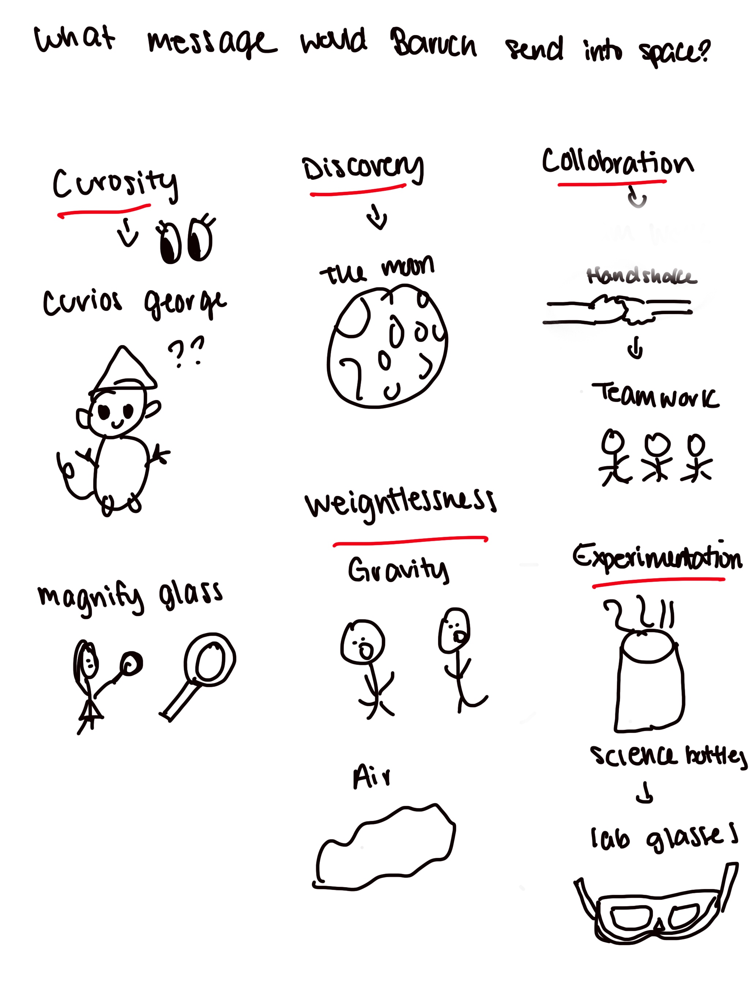

01
Visual Translation Game
The initial visual translation game warm-up[cite: 6]. We began by asking what message Baruch would send into space, generating rapid icon associations around core motifs like curiosity, discovery, handshakes, teamwork, magnify glasses, and weightlessness[cite: 6].
Extracted Prompts & Ideas
Curiosity
Discovery
Handshake
Teamwork
Weightlessness
Science Bottles